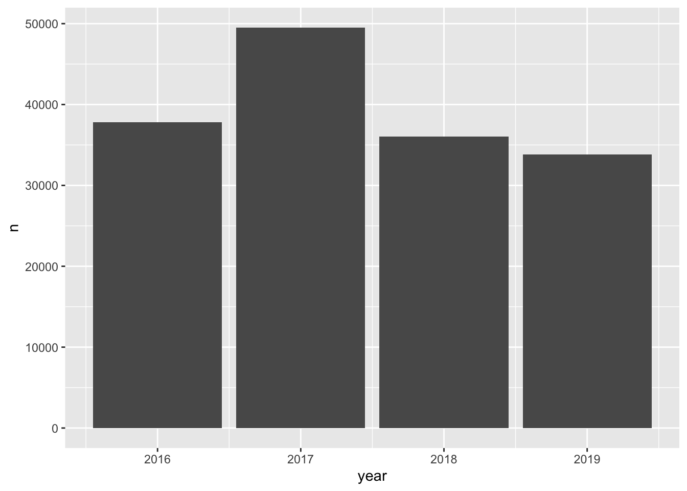
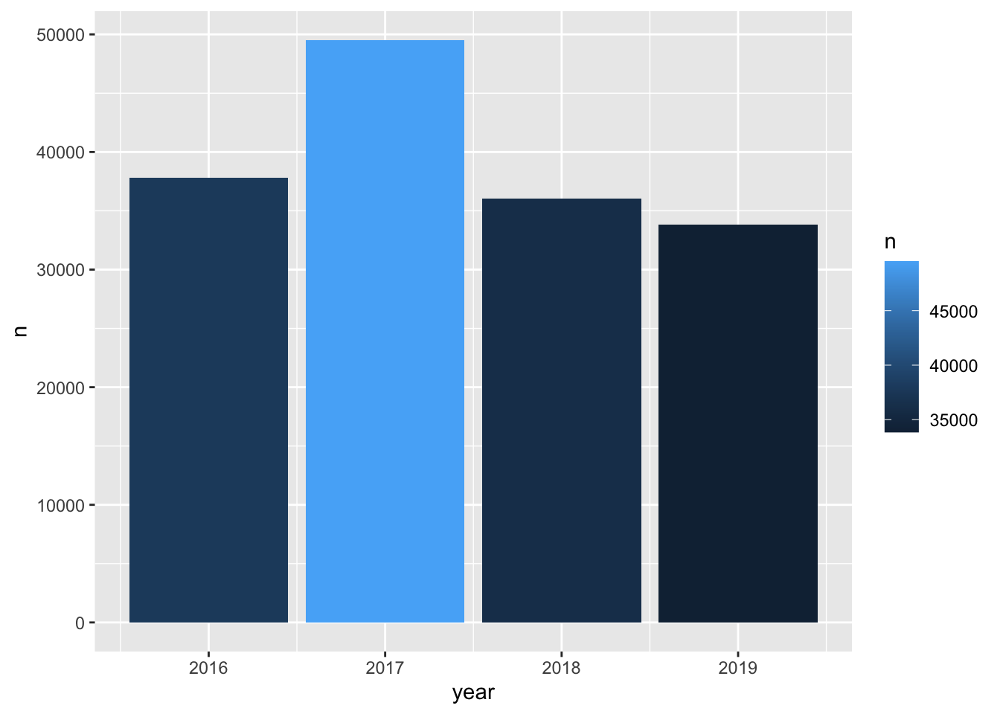
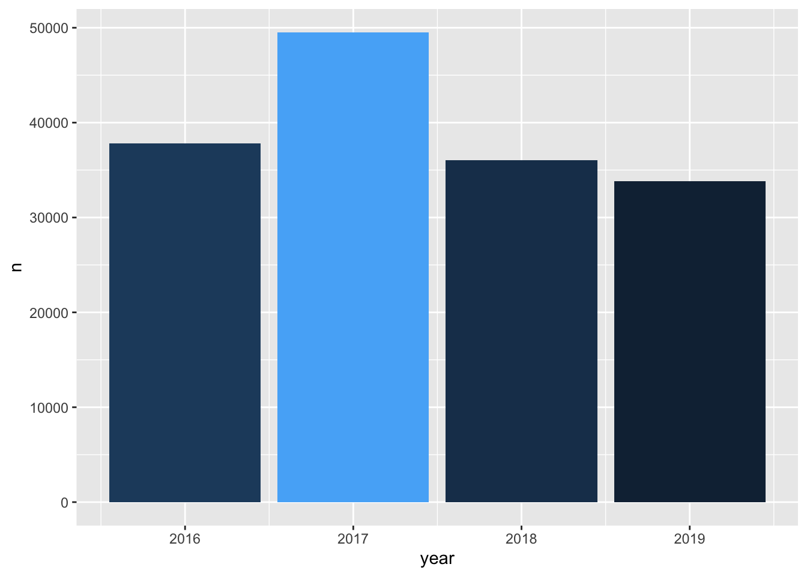
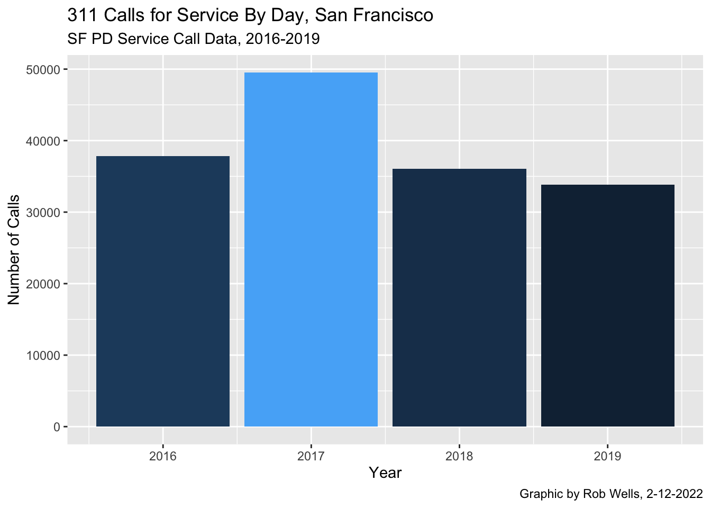

library(tidyverse)
library(rio)
library(janitor)
library(sentimentr)
library(tidyr)Hosting a GitHub Page
Hosting a GitHub Page - R Cheat Sheet
This exercise will allow you to create a basic web page which will be required for the Investigate Your Community final project option.
For this exercise, you will create a page with your one paragraph story idea. You will then host it on your GitHub page.
Styled Text
At the core, QMD files are text files, and they allow you to use a very lightweight “markup” language to style text, similar to html, but much less fussy.
Outside of the codeblocks (the gray sections where we write code), we can style any text using standard markdown styling.
This is a nice guide to styling text with markdown: Markdown guide
We can create headings similar to html’s h1 to h6 with hashtags.
This is an h5
We can create links, like this: google
We can bold or italic text.
We can create bulleted lists.
- bullet one
- bullet two
- bullet three
Code blocks
We can also add special code inside of code blocks – the gray sections where we write code – that control how they render in our html document. These output options let us do things like:
- Show or hide the code when we render our html document (echo: true or false)
- Prevent the code from actually running when we render our html document (eval: true or false)
- Hide warnings from outputing when we render our html document (warning: true or false)
There’s a full guide here.
The code below, for example, will output the text inside the print statement when rendered to html, but the actual code – the print() function – will be hidden.
Create your website
In place of these instructions, you will paste your project one paragraph story idea into this document and any code you’ve developed so far.
You will need to load libraries and data because rendering a page requires a full R session to execute on the code.
First, create H1 headers
For example:
Income and Vacancies of Baltimore Neighborhoods 2020
Looking at wealth inequality in Charm City
SF <- rio::import("https://docs.google.com/spreadsheets/d/1-nkosLJKkfeLSl-UG82DDyiEw5-62kX2alS6ICG9iuk/edit#gid=552005485", sheet = "SF Police_Department_Calls_for_") #display the first six rows of SF using head
head(SF) Crime Id Original Crime Type Name Report Date Call Date Offense Date
1 190040497 919 1/4/2019 1/4/2019 1/4/2019
2 190200644 Homeless Complaint 1/20/2019 1/20/2019 1/20/2019
3 190213959 Homeless Complaint 1/21/2019 1/21/2019 1/21/2019
4 190271011 915 1/27/2019 1/27/2019 1/27/2019
5 190141952 Homeless Complaint 1/14/2019 1/14/2019 1/14/2019
6 190020699 Homeless Complaint 1/2/2019 1/2/2019 1/2/2019
Call Time Call Date Time Disposition Address City
1 6:58 1/4/19 6:58 HAN 400 Block Of Jones St San Francisco
2 6:19 1/20/19 6:19 HAN 8th And Market
3 22:42 1/21/19 22:42 ADV Mission St/24th St San Francisco
4 9:28 1/27/19 9:28 HAN Alabama St/23rd St San Francisco
5 13:20 1/14/19 13:20 HAN Newcomb Av/quint St San Francisco
6 8:19 1/2/19 8:19 HAN 700 Block Of Funston Av San Francisco
State Agency Id Address Type Common Location
1 CA 1 Premise Address
2 CA 1 Geo-Override
3 CA 1 Intersection
4 CA 1 Intersection
5 CA 1 Intersection
6 CA 1 Premise Address #examine all of the SF data using glimpse
glimpse(SF)Rows: 157,237
Columns: 14
$ `Crime Id` <int> 190040497, 190200644, 190213959, 190271011,…
$ `Original Crime Type Name` <chr> "919", "Homeless Complaint", "Homeless Comp…
$ `Report Date` <chr> "1/4/2019", "1/20/2019", "1/21/2019", "1/27…
$ `Call Date` <chr> "1/4/2019", "1/20/2019", "1/21/2019", "1/27…
$ `Offense Date` <chr> "1/4/2019", "1/20/2019", "1/21/2019", "1/27…
$ `Call Time` <chr> "6:58", "6:19", "22:42", "9:28", "13:20", "…
$ `Call Date Time` <chr> "1/4/19 6:58", "1/20/19 6:19", "1/21/19 22:…
$ Disposition <chr> "HAN", "HAN", "ADV", "HAN", "HAN", "HAN", "…
$ Address <chr> "400 Block Of Jones St", "8th And Market", …
$ City <chr> "San Francisco", "", "San Francisco", "San …
$ State <chr> "CA", "CA", "CA", "CA", "CA", "CA", "CA", "…
$ `Agency Id` <int> 1, 1, 1, 1, 1, 1, 1, 1, 1, 1, 1, 1, 1, 1, 1…
$ `Address Type` <chr> "Premise Address", "Geo-Override", "Interse…
$ `Common Location` <chr> "", "", "", "", "", "", "Jose Coronado Plgd…#This cleans column names
SF <- janitor::clean_names(SF)
#This processes dates for analysis
glimpse(SF)Rows: 157,237
Columns: 14
$ crime_id <int> 190040497, 190200644, 190213959, 190271011, 1…
$ original_crime_type_name <chr> "919", "Homeless Complaint", "Homeless Compla…
$ report_date <chr> "1/4/2019", "1/20/2019", "1/21/2019", "1/27/2…
$ call_date <chr> "1/4/2019", "1/20/2019", "1/21/2019", "1/27/2…
$ offense_date <chr> "1/4/2019", "1/20/2019", "1/21/2019", "1/27/2…
$ call_time <chr> "6:58", "6:19", "22:42", "9:28", "13:20", "8:…
$ call_date_time <chr> "1/4/19 6:58", "1/20/19 6:19", "1/21/19 22:42…
$ disposition <chr> "HAN", "HAN", "ADV", "HAN", "HAN", "HAN", "HA…
$ address <chr> "400 Block Of Jones St", "8th And Market", "M…
$ city <chr> "San Francisco", "", "San Francisco", "San Fr…
$ state <chr> "CA", "CA", "CA", "CA", "CA", "CA", "CA", "CA…
$ agency_id <int> 1, 1, 1, 1, 1, 1, 1, 1, 1, 1, 1, 1, 1, 1, 1, …
$ address_type <chr> "Premise Address", "Geo-Override", "Intersect…
$ common_location <chr> "", "", "", "", "", "", "Jose Coronado Plgd, …#This cleans column names
SF <- janitor::clean_names(SF)
#This processes dates for analysis
SF$call_date2 <- mdy(SF$call_date)
#This creates a new column for year
SF$year <- year(SF$call_date2)#descending order
SF1 <- SF %>%
arrange(desc(report_date))
#head(SF1)Years <- SF %>%
group_by(year) %>%
count(year) %>%
arrange(desc(year))
head(Years)# A tibble: 4 × 2
# Groups: year [4]
year n
<dbl> <int>
1 2019 33855
2 2018 36057
3 2017 49523
4 2016 37802ggplot(data=Years) +
geom_col(mapping=aes(x=year, y=n)) 
ggplot(data=Years) +
geom_col(mapping=aes(x=year, y=n, fill=n)) 
ggplot(Years,aes(x = year, y = n,
fill = n)) +
geom_col(position = "dodge") +
theme(legend.position = "none")
ggplot(Years,aes(x = year, y = n,
fill = n)) +
geom_col(position = "dodge") +
theme(legend.position = "none") +
#This is your title sequence
labs(title = "311 Calls for Service By Day, San Francisco",
subtitle = "SF PD Service Call Data, 2016-2019",
caption = "Graphic by Rob Wells, 2-12-2022",
y="Number of Calls",
x="Year")
Example dataframe
reviews <- tibble(
id = 1:4,
text = c(
"The food was not good, but the service was extremely friendly.",
"I barely enjoyed the movie, although the actors were talented.",
"I am a vampire and I'm going to kill you and suck out your blood.",
"I am excited that you are so happy."
)
)1. Split into sentences and calculate sentiment at the sentence level
sentence_sentiment <- reviews %>%
get_sentences() %>%
sentiment_by(by = c("id")) # Summarizes back to row/document level if desiredView sentence-by-sentence detailed breakdown
detailed_sentences <- reviews %>%
get_sentences() %>%
sentiment()
head(detailed_sentences) id text
<int> <get_sentences>
1: 1 The food was not good, but the service was extremely friendly.
2: 2 I barely enjoyed the movie, although the actors were talented.
3: 3 I am a vampire and I'm going to kill you and suck out your blood.
4: 4 I am excited that you are so happy.
element_id sentence_id word_count sentiment
<int> <int> <int> <num>
1: 1 1 11 0.3429692
2: 2 1 10 0.4190018
3: 3 1 15 -0.4131182
4: 4 1 8 0.5303301# You will write your code in chunks but not execute the data. Use {r eval=FALSE, include=TRUE} in the header so the page will render without running the actual code.
income_vacancy %>%
ggplot(aes(x = community)) +
geom_point(aes(y=income_2020), color = "#64D197", stroke=5) +
geom_point(aes(y=vacant_2020*1000), stroke=5, color = "#FB8AE3") +
scale_y_continuous(
name = "2020 Income (Green)", limits=c(0, 62000), labels=scales::dollar_format(),
sec.axis = sec_axis(~./60000, name="2020 Percent Vacancies (Red)", labels = scales::percent))+
#scale_y_continuous(labels = scales::percent) +
labs(
title = "Income and Vacancies of Baltimore Neighborhoods 2020",
x = "Community",
caption = "source: BNIA Data - By: Parker Leipzig and Rob Wells"
)Set up for hosting
- Create a new folder in your repository called “docs” (if one isn’t there already)
- Rename this document as “index.qmd”
- Move “index.qmd” into the “docs” folder
Render this document as an html page
- Make sure this document is named “index.qmd” and is in the “docs” folder
- Click Render button. It will create an html version of this page, called “index.html”
- Use GitHub Desktop to push your files to your your github repository on the web.
- Access the URL from your Github repository.
Host html on GitHub
- Go to your github repository on the web, such as https://github.com/djnf-data-2026/casey-mann
- Click on Settings on the top right.
- Scroll down to the Pages section of Settings.
- Change the Branch to /docs and click save.
To see your file hosted:
- Back to your GitHub repo on the web: such as https://github.com/djnf-data-2026/casey-mann
- Click on Settings, then Pages
- Under GitHub Pages, you should see “Your site is live at https://djnf-data-2026.github.io/casey-mann/”
- Click that URL
- If it works, email it to robwells@umd.edu
REVEL IN YOUR NERD POWERS
Part 2: Embedding Images
create a folder in your repository’s main branch, call it images
find any .jpeg, .jpg or .png file and insert it into that folder.
In a QMD file, display the image as follows:
#
#
A more advanced technique controlling the width and height
#
Embedding code
From a Datawrapper Map
Embedding video
Deep Nerd Video
A great lecture on structural racism in journalism
Now replace these two videos with something you selected.
The embed code is in the video share feature
Instructions to embed a gif
This is a very basic starter but it will get you to the finish line on Saturday. Good luck!
–30–